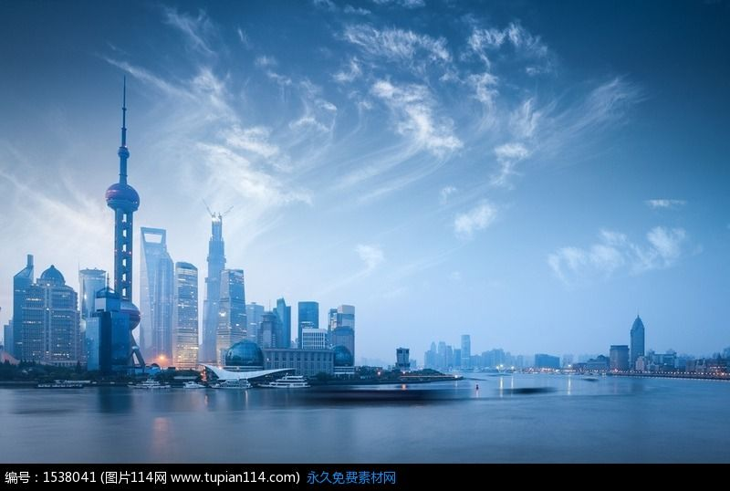
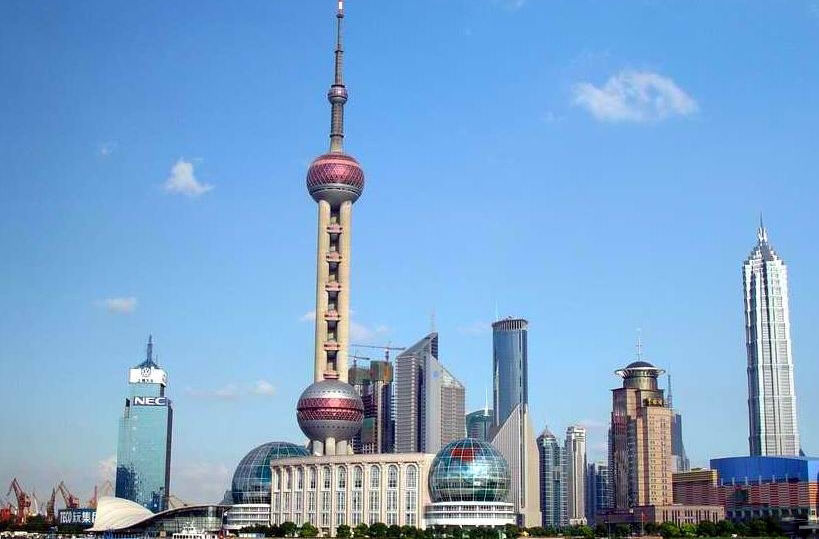
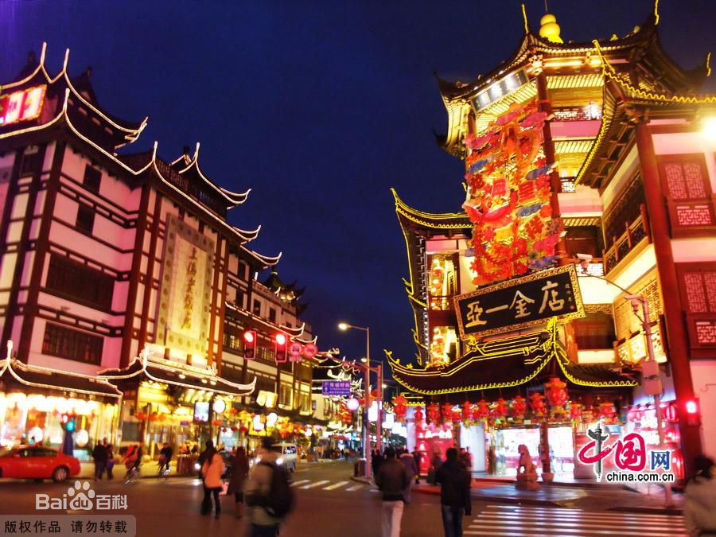
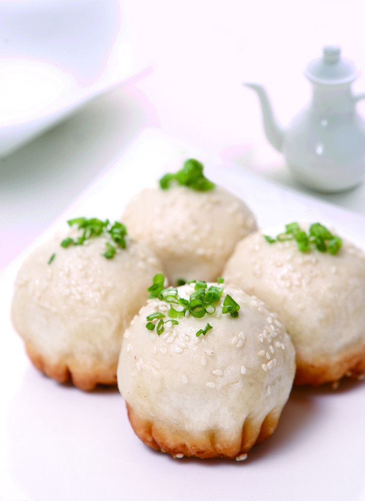
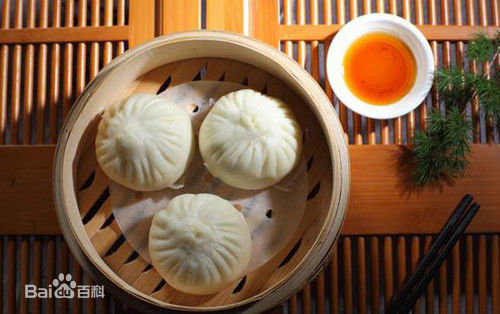
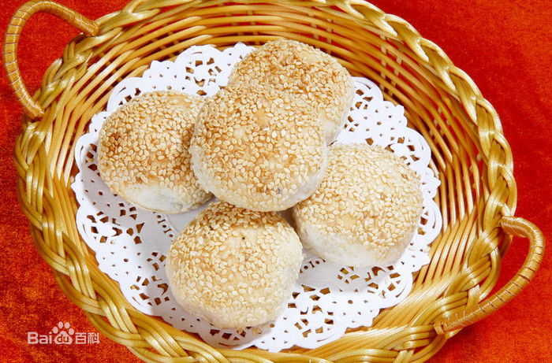

欢乐谷
关于上海

大家印象
现代化的大都市，外滩的夜景值得一看。商业发达，交通便利。美食方面推荐浓油赤酱的本帮菜，也可以去城隍庙品尝地道的上海小吃。上海这座城市的节奏很快，东西也比较贵。
走进上海
上海，又称“上海滩”，是一座极具现代化而又不失中国传统特色的国际大都市。由于其地处中国漫长海岸线的最正中，是中国四个中央直辖市之一，是中国的历史文化名城。百余年来，上海一直是中国商业的中心、财富的汇聚地，是中国仅次于香港的著名“购物乐园”，更是和世界联系最紧密的那根纽带。 上海也是一个新兴的旅游目的地，由于它深厚的文化底蕴和众多的历史古迹，如上海的地标——浦西的外滩和新天地。位于浦东的东方明珠广播电视塔与金茂大厦却呈现出另一番繁华景象，它们与上海环球金融中心等建筑共同组成了全球最壮丽的天际线之一，而2014年将建成的上海中心，更会为“东方巴黎”添上灿烂的一笔。此外，上海迪斯尼乐园也将于2015年开张。 昔日的上海烙印着 “十里洋场”的繁华，讲述着旧上海滩的浮华旧梦。今日的上海，则以浦东开发开放为代表，日新月异的都市面貌使上海成为展示中国经济发展和改革开放新成就的窗口，并于2010年成功举办了第41届世界博览会。
最佳季节：3月-5月。上海温度适中，适合郊外踏青；9至11月期间的上海秋意浓浓，不能错过品尝膏足肉美的大闸蟹。 上海位于长江三角洲的前缘，属于典型的亚热带海洋性季风气候，四季分明，温和湿润，雨水充足，且多集中在5-9月。上海气温最热的时候是在7-8月，超过 35℃的高温天数有10天左右，不适宜室外活动；最冷的时候是1月下旬到2月初，虽然很少有降雪，但湿冷的空气、刺骨的北风往往令人难以忍受，要注意防寒保暖。6月中旬至7月上旬是梅雨季节，阴雨连绵；8月底到9月上中旬是台风多发季节，常有突如其来的狂风暴雨，这两个时段游上海一定要带好晴雨伞。 春秋两季是前往上海旅游的最佳季节。 3至5月的上海温度适中，草长莺飞，适合郊外踏青，观赏桃红柳绿；9至11月期间的上海秋意浓浓，此时，正是在上海，不能错过品尝膏足、肉美的大闸蟹。 7、8月份的上海温度比较高，空气湿度大，不适宜户外运动；1、2月份的冬季是上海最冷的季节，此时前往要注意防寒保暖；6、7月份是上海的梅雨季节，外出要注意带伞。
建议游玩：3-7天
推荐游览路线
Day1:豫园 ->老城隍庙 ->上海老街
Day2:东方明珠->外滩观光隧道 ->外滩十八号 ->外白渡桥 ->上海黄浦江游览清游江船
Day3:上海人民广场 ->上海杜莎夫人蜡像馆 ->南京路 ->老上海1930风情街
Day4:宋庆龄故居 ->上海交通大学 ->徐家汇天主教堂 ->田子坊
Day5:新天地 ->雁荡路休闲街 ->徐志摩旧居 ->张爱玲故居 ->静安寺
不可错过
---------------必玩景点排行榜---------------
Top 1--->外滩

Top 2--->东方明珠

Top 3--->老城隍庙

---------------必吃美食排行榜---------------
Top 1--->生煎

Top 2--->南翔小笼包

Top 3--->蟹壳黄
